About the Project
A behind-the-scenes look at The Assignment Survival Kit. How I built it, the tools I used, and why I made the decisions I did.
The Concept
This is the project I built for the University of Sussex Introduction to Web 3D Applications module.
I built three models that represent the three things that always show up when I’m trying to finish coursework: a Red Bull, my room, and my MacBook. The brief required at least three original 3D models and explicitly excluded the Coca-Cola brand designed in the labs, so I picked a theme I could relate to and built around it.
The site is a multi-page Bootstrap 5 application with a Three.js viewer on every model page, an MVC backend (PHP + SQLite, with a JSON fallback), AJAX content loading, animations, audio, sophisticated lighting, and material state changes triggered through JavaScript.
Site Map
The site is structured around five public-facing pages plus a backend layer. Here is how they connect:
- index.html — Home page. Hero section, three product cards linking to each model page.
- redbull.html — Red Bull 250ml model page with controls.
- room.html — L-shaped study room model page with lamp toggle.
- macbook.html — MacBook model page with multi-stage open animation.
- about.html — This page.
Behind those, the backend layer:
- index.php — MVC framework entry point (Lab 7 pattern).
- setup_database.php — one-time script that builds the SQLite database from
data.json. - api/get_models.php — the AJAX endpoint that returns model data drawn from SQLite.
- application/model/model.php — PDO-based data-access class.
- application/controller/controller.php — coordinates between the model and the view.
The 3D Models
All three models were authored in Blender and exported as glTF Binary (.glb) files. Three.js loads them via GLTFLoader. Every export used identical settings: glTF Binary format, +Y Up transform, modifiers applied on export, UVs and normals included, and materials embedded.
Red Bull 250ml Can
The Red Bull is the most photoreal of the three models. It was built in Cycles at 1920×1080 / 30 fps and consists of 10 separate mesh objects totalling 4,056 polygons. The body itself is a 320-polygon cylinder modelled to real-world dimensions of 53mm × 53mm × 134.5mm, the exact proportions of an actual 250ml slim can.
The can’s anatomy is fully modelled:
- CanBody — 258 verts, 320 polys. Holds three material slots (label wrap, upper aluminium taper, lower aluminium taper).
- BottomDome & BottomRim — 1,344 polys combined. The concave recess and standing ring at the base, both built from torus and disc primitives.
- TopLid & TopRim — 1,344 polys combined. The flat aluminium cap with the necked rim at the very top.
- DrinkingHole / DrinkingHoleOpen — two states of the punch-out, swapped during the open animation.
- DrinkingHoleScore — 600 polys for the embossed tear line around the hole.
- PullTab — 128 polys, rotated 65° on the X axis to sit naturally pulled-up.
- Rivet — 240-poly dome connecting the tab to the lid.
Materials — seven Principled BSDF shaders, all carefully tuned:
- MAT_Body_Label — the printed label, a UV-mapped image texture (
redbull_can_lable.png) over a semi-metallic finish (Metallic 0.8, Roughness 0.3). - MAT_Aluminium_Lid — near-fully metallic (Metallic 0.9), very low roughness (0.15) for that polished aluminium look.
- MAT_Aluminium_Base — fully metallic, slightly rougher (0.4) for the matte brushed feel of the bottom.
- MAT_Aluminium_Tab — polished metal for the rivet and score line (Specular 1.0).
- MAT_Tab_Blue — Red Bull’s brand blue (RGB 0.01, 0.07, 0.52), semi-metallic finish.
- MAT_DrinkingHole — non-metallic, slightly transparent (Alpha 0.82) to suggest the thin sealed material.
- MAT_DrinkingHoleOpen — very dark and rough, simulating the dark interior visible through the opening.
Lighting — a proper three-point area-light rig:
- KeyLight — 80W warm white area light (120×120mm), front-right and high. The primary illumination.
- FillLight — 30W cool-tinted area light (180×180mm), front-left at mid-height. Lifts the shadow side.
- RimLight — 50W near-white area light (80×80mm), behind the can. Gives the silhouette separation against the background.
Camera — a 75mm telephoto on a full-frame sensor, positioned (120, −280, 110)mm. The 75mm focal length minimises perspective distortion, which is standard practice for product photography.
Crushed variant — redbull_can_crushed.blend is a separate file built by joining all 10 original mesh objects into a single 4,952-polygon mesh, applying a Z-scale of 0.5509 (compressing to ~55% of the original height), then sculpting irregular dents into it. The slight rotation (~10° X, ~5° Y) makes the crush look naturally off-balance rather than perfectly flat. The Three.js front-end loads this .glb on demand when the user clicks Crush Can.
L-Shaped Study Room
The room is a complete low-poly isometric scene, stylised in a flat aesthetic similar to the minimalist 3D renders you see on Dribbble or Pinterest. It was built in EEVEE at 1920×1080 / 24 fps and contains 54 objects, 50 of which are meshes, organised across 51 named materials.
Style decisions:
- The vast majority of objects are simple cubes (8 verts, 6 polys each) — a deliberate low-poly aesthetic that runs efficiently in WebGL.
- Every material is flat colour Principled BSDF: Metallic 0.0, Roughness 0.5, Alpha 1.0. No image textures, no PBR detail. Colour is used purely for differentiation.
- The left wall has 16 vertices instead of 8 because a window opening was cut into it, which is the only piece of non-trivial topology in the entire room.
- Two exceptions to the all-cube rule: the lampshade (32-sided cylinder) and the football (icosphere with two material slots for the white and black panels).
What’s in the room: a bed (frame, mattress, pillow, green headboard), desk and chair, computer monitor, floor lamp, window with frame and dark-blue glass, mint-green floor rug, football, two book-shelves with three coloured books, a potted plant, and a flat low-poly red car poster on the back-left wall (built from 7 cubes layered at the same world position).
Colour palette: walls in steel blue (RGB 0.173, 0.373, 0.553), floor in sandy beige, white desk, dark brown chair, green headboard and rug. The palette was chosen to feel calm and study-friendly.
Lighting — this scene uses three different light types rather than three of the same:
- SunLight — 2.8W warm-white Sun light, angled from the upper-right front. Provides the directional “daylight from outside” quality.
- FillLight — 70W cool-white Area light (5000×5000mm). A massive soft fill that simulates global ambient light bouncing around the room.
- LampLight — 50W warm-yellow Point light placed inside the floor-lamp mesh. This is the key one — it’s the in-scene practical light that I needed to control from the web app.
Getting the lamp working in Three.js needed a specific Blender export setting. I enabled the KHR_lights_punctual extension on glTF export so the Point light itself was preserved inside the .glb file. At runtime, my JavaScript walks the loaded scene tree, finds the baked light, disables it, then creates a fresh THREE.PointLight at the exact same world position. This way I get full programmatic control over intensity and visibility from the page’s lamp toggle button. When the user clicks “Lamp On/Off”, the same handler also adds an emissive material to the lampshade mesh so it appears to glow from inside.
Camera — a 50mm IsoCam positioned far back at (13000, −13000, 10000)mm with a 54.74° X rotation and 45° Z rotation. Those numbers aren’t arbitrary — 54.74° is the mathematically exact angle for a true isometric view, and 45° on Z is the standard isometric orientation.
MacBook
The MacBook is the most technically ambitious of the three. Built in EEVEE at 1920×1080 / 30 fps, it has 55 total objects, including 52 meshes, 1 empty (parent for the keyboard), and 1 armature. The whole thing uses just 6 materials.
This file deliberately has no lights and no camera, it was built as an asset meant to be imported into other scenes. All lighting is added at runtime in Three.js.
Why so many separate parts? Because each one has to be controlled independently from the web app. The screen needs to light up. The keys need to glow. The body colour needs to swap between Silver and Space Grey. If they were one merged mesh, none of that would be possible.
Object hierarchy:
- KeyboardKeys (empty parent) → Key_001 to Key_044 + Key_Spacebar (45 keys total)
- LidArmature (rig) → MacBookLid → LidLogo, plus ScreenBezel, plus ScreenPanel
- MacBookBase, KeyboardRecess, TrackpadSurface, HingeBar (un-parented base components)
Body parts & precision:
- MacBookBase — 350×240×16mm. 13-inch MacBook proportions, with 56 verts (extra edge loops for chamfered corners, not a plain cube).
- MacBookLid — same chamfered construction, parented to the armature so the bone drives it.
- ScreenPanel — 300×190×0.3mm. The blue emission colour (RGB 0.251, 0.502, 1.0) is set up in the material but emission strength is 0 — it’s the JavaScript that fades emission in when the lid opens.
- LidLogo — 158 verts for the curved Apple-style logo, built from a Cylinder primitive.
Keyboard generation — the 45 keys were built using Blender’s Python scripting interface. Each key is a 20×20×5mm cube spaced 24mm centre-to-centre across a 4-row grid, with a wider Spacebar at the bottom. Generating 45 cubes by hand would have been tedious and the spacing wouldn’t have been perfect. Parametric scripting is just better for repeating geometry.
Animation — the lid is rigged to a single-bone armature (HingeBone) positioned at the back-edge hinge point (0, 120mm, 19mm). The bone tail extends 50mm forward, defining the rotation axis. The animation action LidOpen.001 runs across frames 1–60 (2 seconds at 30fps). The lid, bezel, screen panel and Apple logo are all parented to the armature, so when HingeBone rotates, all four pieces lift together as a rigid unit. The Three.js side plays this clip forward on Open, and reverses it (using action.timeScale = -1) on Close.
Materials — six runtime-controlled shaders:
- BaseMaterial — light silver-grey (RGB 0.784, 0.784, 0.804), Metallic 0.6, Roughness 0.4. Used by the body, lid, and hinge bar. Swapped between Silver and Space Grey at runtime by JavaScript.
- KeyboardMaterial — near-black (0.102), Metallic 0, Roughness 0.8. Matte plastic. Receives an emissive backlight (cool blue-white) at runtime.
- BezelMaterial — pure black, very rough (0.9). The matte screen surround.
- ScreenMaterial — black with a pre-configured blue emission. Strength is 0 in the file, faded up to 1.5 by JavaScript when the lid opens.
- TrackpadMaterial — very dark grey, slightly metallic (0.2), low roughness (0.3). Glass-like trackpad finish.
- LogoMaterial — black with low roughness, slightly glossy.
Wireframe Evidence from Blender
Wireframe screenshots from Blender showing the underlying geometry of each model.
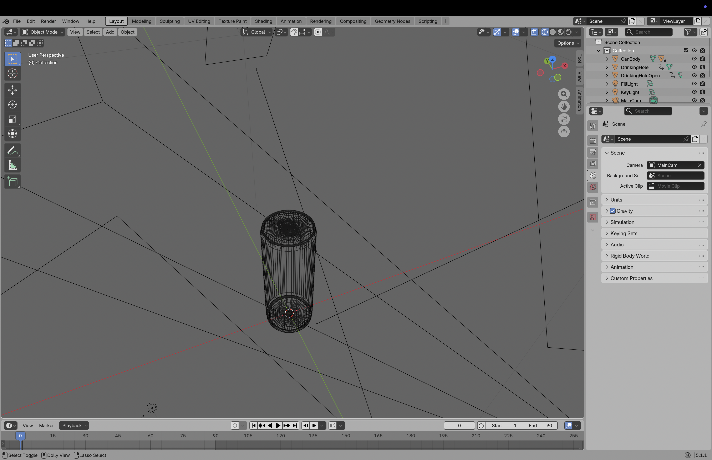
Red Bull 250ml can wireframe.
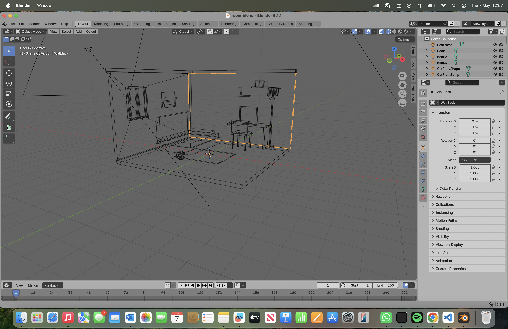
L-shaped study room wireframe.
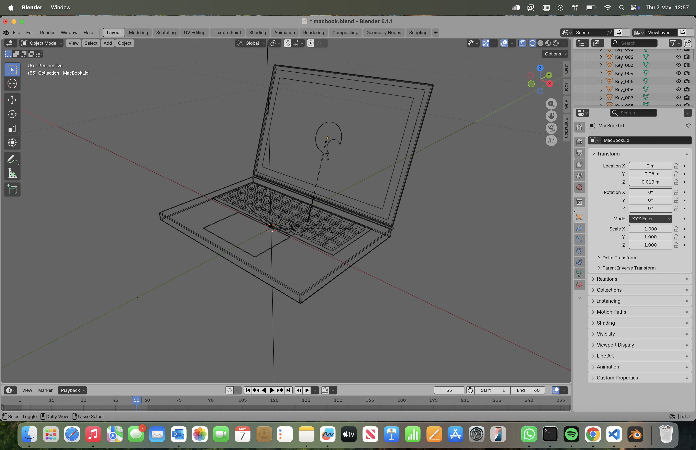
MacBook wireframe.
A few things worth pointing out from these wireframes:
- Red Bull — the high vertex density along the body cylinder is what gives the can its smooth silhouette in the final shaded render. The separate top and bottom rim torus primitives are clearly visible, as is the tilted PullTab at 65° on the X axis.
- Room — the deliberate low-poly aesthetic is obvious from the wireframe. The vast majority of objects are simple cubes (8 vertices, 6 faces each). The exception is the WallBack mesh, which has extra geometry where the window was cut through with a Boolean operation.
- MacBook — you can clearly see the bone of the LidArmature controlling the lid’s open/close rotation. The chamfered corners on the body and lid are visible from the extra edge loops, and the uniform grid of keyboard keys shows the result of the parametric Python generation.
Design Choices
Theme & Colour Palette
The site uses a dark navy background with soft sage-green accents. I chose this palette because it feels calm and study-friendly rather than bright and aggressive, which matches the “late-night assignment grind” concept. The full palette is defined as CSS custom properties in style.css:
-
--bg-dark: #0f1419— main background, dark navy -
--bg-card: #1a2128— product cards, subtly raised from background -
--bg-panel: #161c22— controls panel on model pages -
--accent-sage: #94c5a4— primary accent for headings, CTAs, active states -
--accent-warm: #d4b896— warm tan for lighting-related buttons -
--accent-slate: #3d4f5c— muted slate for secondary elements -
--text-light: #e8e6e1— primary body text, off-white
Using CSS variables means I can re-skin the entire site by changing six values in one place, rather than hunting through every stylesheet.
Typography
Two Google Fonts: Oswald for headings (bold, condensed, with strong vertical proportions) and Open Sans for body copy (highly legible at small sizes). I capped it at two fonts to avoid the cluttered look you get when sites mix three or more typefaces.
Layout & Responsive Grid
The home page is a card grid built on Bootstrap 5.3’s .row/.col-md-4 system, with three equal cards on desktop collapsing to a single stacked column on mobile.
Each model page uses an asymmetric two-column layout: .col-lg-8 for the 3D viewport and .col-lg-4 for the controls panel. Below the 992px breakpoint the viewport drops to half-screen height with the controls panel stacking underneath. This is the mobile-first responsive design approach taught in Lab 1, applied properly with custom media queries at 991px and 575px.
Controls UI
Each model page presents controls in logical groups: Animation, View, Lighting, and (on the MacBook) Body Colour. Buttons share a base style (.btn-3d) with subtle variants (.btn-view, .btn-light, .btn-sound) so the user can tell visually that View buttons do one kind of thing and Lighting buttons another. Active states use a sage-green border plus a tinted background so it’s always obvious what’s currently on.
Brand Identity
The “SURVIVAL KIT” logo uses a two-tone CSS treatment: SURVIVAL in the sage accent colour, KIT in off-white, with a small “The Assignment Edition” strapline in muted grey beneath. It’s built entirely from styled <span> elements rather than an image, so it scales perfectly at any resolution and stays accessible to screen readers.
MVC Architecture: PHP, SQLite & AJAX
The application implements the full Model-View-Controller pattern from Lab 7 and Lab 8, with both halves of the module’s back-end teaching combined into one robust system.
The Data Flow
When a user visits one of the model pages, the browser fires an AJAX request to the PHP API, the controller calls the model class, the model uses PDO to query the SQLite database, and the rows come back as JSON to be injected into the HTML placeholders. The next section breaks down what each layer is doing.
The Three Layers
- Model (
application/model/model.php) — A PHP class that uses PDO (PHP Data Objects) as a data-access abstraction layer. It connects to the SQLite database, exposes methods likegetAllModels()andgetModelByPage($page), uses prepared statements for parameter binding, and handles errors viaPDOException. The model knows nothing about HTTP, AJAX, or HTML. Its pure data access. - Controller (
application/controller/controller.php) — A PHP class instantiated byindex.php(the MVC entry point, mirroring Lab 7 Figure 3). The controller has methods likegetAllModels()that internally call the model class. It coordinates: it doesn’t talk to the database directly, and it doesn’t produce HTML. It just exposes data to whoever asks for it. - View — The HTML pages themselves. Each one contains placeholder elements marked with
data-content="model-title",data-content="model-description", anddata-content="model-technical". The browser-sidedata_loader.jsfetches data from the API and populates these placeholders at runtime.
Key Code Snippet — The Model Class
This is the core of the data-access layer (simplified):
class Model {
private $db;
public function __construct() {
// Connect to SQLite using PDO (data-access abstraction)
$this->db = new PDO('sqlite:' . __DIR__ . '/../../database/models.db');
$this->db->setAttribute(PDO::ATTR_ERRMODE, PDO::ERRMODE_EXCEPTION);
}
public function getModelByPage($page) {
$stmt = $this->db->prepare("SELECT * FROM models WHERE page = :page");
$stmt->execute([':page' => $page]);
return $stmt->fetch(PDO::FETCH_ASSOC);
}
}Two Patterns, One App
The application supports both back-end approaches taught in the module:
- Primary path (Lab 7/8): AJAX →
api/get_models.php→ Controller → Model → PDO → SQLite → JSON response - Fallback path (Lab 6): AJAX →
data.jsonstatic file → injected into View
The front-end data_loader.js tries the PHP endpoint first and falls back to the JSON file automatically if PHP isn’t running. This means the site works whether the user opens it through php -S localhost:8000 (full MVC path active), VS Code Live Server (JSON fallback), or any plain static host. The architectural pattern is the same in both cases, only the data store changes.
Why This Architecture Matters
- Separation of concerns — the model, controller, view, and AJAX layer are all genuinely independent. I could swap SQLite for MySQL by changing one line in
model.php. - Security — PDO prepared statements with named parameters mean the app is naturally protected against SQL injection.
- Maintainability — all the model metadata lives in one place. To add a fourth model I edit
data.json, re-runsetup_database.php, and that’s it. - Robustness — the JSON fallback means the front-end never breaks regardless of how the site is served.
Technologies Used
Everything in the technology stack, grouped by where it sits:
Front-end
- HTML5 — semantic page structure with
<nav>,<main>,<header>,<section>,<footer> - CSS3 — custom properties for theming, flexbox, grid, transitions, media queries
- Bootstrap 5.3 — responsive grid layout, navbar with dropdown, container/row/col system
- JavaScript ES6 — all the interaction logic, event handlers, animation timing
- Three.js (r128) — the 3D rendering engine
- GLTFLoader — loads
.glbfiles into Three.js - OrbitControls — mouse drag to rotate, scroll to zoom on every model
- AnimationMixer — plays embedded GLB animations and reverses them on close
- AudioListener & AudioLoader — loads and plays the
.m4asound effects - Font Awesome 6 — icons throughout the UI
- Google Fonts — Oswald and Open Sans
Back-end & Data
- PHP 8.5 — server-side controller and model classes (Lab 7 / Lab 8 stack)
- SQLite 3 — the relational database for the model layer
- PDO (PHP Data Objects) — data-access abstraction with prepared statements
- jQuery 3.6 — specifically for the AJAX layer (
$.getJSON()) and DOM injection - AJAX — asynchronous data fetching at page load
- JSON — both the API response format and the fallback data store
3D Modelling & Assets
- Blender — modelling, rigging, animation, and
.glbexport - Blender Python API — for parametric keyboard generation on the MacBook
- glTF Binary (.glb) — the 3D file format
- KHR_lights_punctual — glTF extension for preserving Blender lights inside
.glbfiles - Audio sourced from freesound.org — Creative Commons sound effects
Development Tools
- Visual Studio Code — primary code editor
- PHP’s built-in server (
php -S localhost:8000) — for running the MVC backend locally - Git / GitHub — version control and codebase hosting
- Chrome DevTools — debugging, responsive testing, network inspection
Why I Chose These Technologies
Three.js over X3DOM
The brief allowed either. I went with Three.js because it’s the more modern of the two, has a far bigger community and more learning resources, integrates more cleanly with JavaScript-driven interactions, and supports modern PBR materials, which was used for the Red Bull’s metallic finish.
jQuery for the AJAX Layer
I could have used the modern fetch() API but jQuery’s $.getJSON() is what Lab 6 and Lab 8 specifically taught, and the rubric names jQuery as one of the recognised technologies. Using the taught approach keeps the implementation consistent with what the module expected, and the API is short and readable.
SQLite (with JSON Fallback)
SQLite was the database taught in Lab 7. It’s self-contained, serverless, zero-config, and lives as a single file in the project, which is good for submission that needs to be portable. Keeping data.json as a fallback was a deliberate engineering choice: the site never breaks regardless of how it’s served, and it visibly demonstrates understanding of both Lab 6 (JSON) and Lab 7/8 (PHP+SQLite) patterns.
Blender Instead of 3ds Max
Lab 2 used 3ds Max, but it’s Windows-only and I’m on macOS. Blender does the same job, exports cleanly to .glb, supports Python scripting, is free and cross-platform, and the fundamental modelling techniques (mesh editing, UV mapping, materials, armatures, animation) transfer directly. The rubric specifically allows alternative authoring packages such as Maya and Cinema 4D, so Blender qualifies for those marks too.
Bootstrap for the Layout
Bootstrap handles the responsive grid, the collapsing hamburger navbar, and the dropdown menu component. Building those from scratch with raw CSS would have been a lot of extra work, especially the navbar accessibility quirks. Where Bootstrap’s default look would have made the site feel generic, I overrode it with custom CSS variables and a custom .btn-3d button class so it doesn’t look like a Bootstrap clone.
Features
What the application actually does:
- Wireframe toggle on every model page (the rubric’s mandatory feature)
- Five camera positions per model (Default, Hero, Front, Top, Side) controlled via JavaScript
- Spin / rotate toggle on each model
- Reset button that restores the default state for every interactive element
- Audio integration — can-opening, can-crushing, lamp-switch, and MacBook startup chime sounds
- Multi-stage MacBook open sequence — lid hinge animation → 1.5s wait → startup chime → screen wake-up → keyboard backlight fade-in, all timed with
setTimeoutandsetInterval - Lighting toggles — Studio spotlight, Ambient/Hemisphere light, lamp on/off (room only)
- Model swapping — the Red Bull page replaces the model entirely with a crushed version on click
- Body colour swap — the MacBook switches between Silver and Space Grey (programmatic material colour change)
- Material state changes — emissive materials fade in on the screen, keyboard, and lampshade via interval-based intensity loops
- AJAX content loading — titles, descriptions, and technical notes fetched dynamically from PHP/SQLite (or JSON fallback)
- Responsive design — layouts reorganise for tablet and mobile viewports with dedicated breakpoints
Going Beyond the Labs
- Alternative 3D authoring workflow — Blender instead of 3ds Max, with full demonstration of mesh editing, UV mapping, materials, armatures, animation, and Python scripting. The rubric explicitly allows alternative packages.
- Parametric Python scripting in Blender — the 45 MacBook keyboard keys were generated programmatically with exact 24mm centre-to-centre spacing rather than placed by hand.
- Choreographed multi-stage animation sequences — the MacBook open isn’t a single animation, it’s a coordinated chain of lid bone rotation, audio playback, screen emission fade-in, and keyboard backlight fade-in, all timed properly with JavaScript.
- KHR_lights_punctual extension handling — preserving Blender Point lights inside
.glbfiles and then disabling and replacing them at runtime so the web app retains full programmatic control. - Reverse animation playback — the MacBook close animation re-uses the same
LidOpen.001action withaction.timeScale = -1rather than authoring a separate close animation. Cleaner, smaller file size. - Dual-MVC architecture — the front-end runs on PHP+SQLite by default (Lab 7/8) but falls back to JSON (Lab 6) automatically. Demonstrates competence with both back-end approaches taught in the module, in the same codebase.
- JavaScript modules consideration — researched the ES6 module-based approach to Three.js (covered in the supplementary handout) and made an informed choice to stay on the global script approach for project consistency.
- Material state machines — emissive materials are not just “on or off”, they fade in over time using
setIntervalintensity ramps, syncing with the audio cues for a polished UX.
Accessibility
Accessibility was considered throughout the build:
- Semantic HTML5 —
<nav>,<main>,<header>,<section>,<footer>so screen readers can navigate the page structure - Alt text on every image, including the model card thumbnails and testing screenshots
- ARIA labels on the navbar toggler so it announces what it does
- WCAG 2.1 AA contrast — off-white text on dark navy passes the contrast standards
- Real button elements — all interactive controls are
<button>tags so they can be focused and activated by keyboard - Responsive across the range — tested from 375px (iPhone SE) up to 1400px+ desktop
- Visual feedback — active button states, hover effects, animated transitions all give clear cues
Testing Strategy
The app was tested systematically across browsers, devices, and a range of interaction scenarios:
Browsers
Built and tested mainly in Chrome on macOS, then verified in Safari and Firefox. The app uses standard ES6 JavaScript and Three.js r128, both of which are well-supported across all current browsers.
Devices & Viewports
Mobile testing was done with Chrome DevTools’ device emulation, primarily at iPhone SE (375×667) and iPhone 14 Pro (393×852) sizes. Tablet sizes were also checked. The key verification points: navbar collapses to hamburger, cards stack vertically, the 3D viewport reflows to half-screen height with controls below.
Functional Testing
Every feature was manually verified:
- All three 3D models load on their respective pages
- Wireframe toggle works on every model
- All five camera angles reposition correctly
- Animations play through to completion without breaking
- The MacBook open sequence runs in the correct order (lid → chime → screen → keyboard)
- Reset buttons properly restore the default state on every page
- All audio files load and play without errors
- Lighting toggles produce visible changes
- The MVC layer fetches and injects content correctly — verified in the Console and Network tabs
- The JSON fallback engages when the PHP server is stopped (verified by stopping
php -Sand reloading)
Evidence of Testing
Screenshots from the testing process. Click any image to enlarge it.
Responsive Testing — Screen Recording
A short walkthrough of the site being tested across laptop, iPad and phone viewports in Chrome DevTools. For each model I tested the animations, the wireframe toggle, the camera angles, and the lighting buttons.
Screen recording of the site being tested across desktop, iPad and phone viewports. Hosted on Panopto.
Desktop
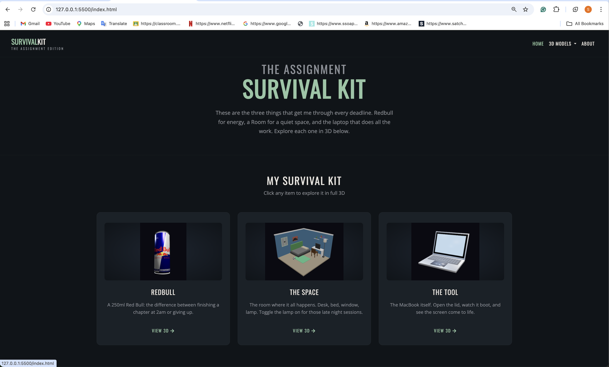
Home page on desktop — hero and three model cards.
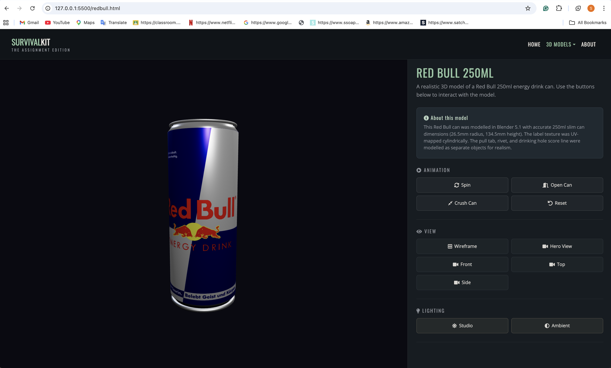
Red Bull page with the controls panel.
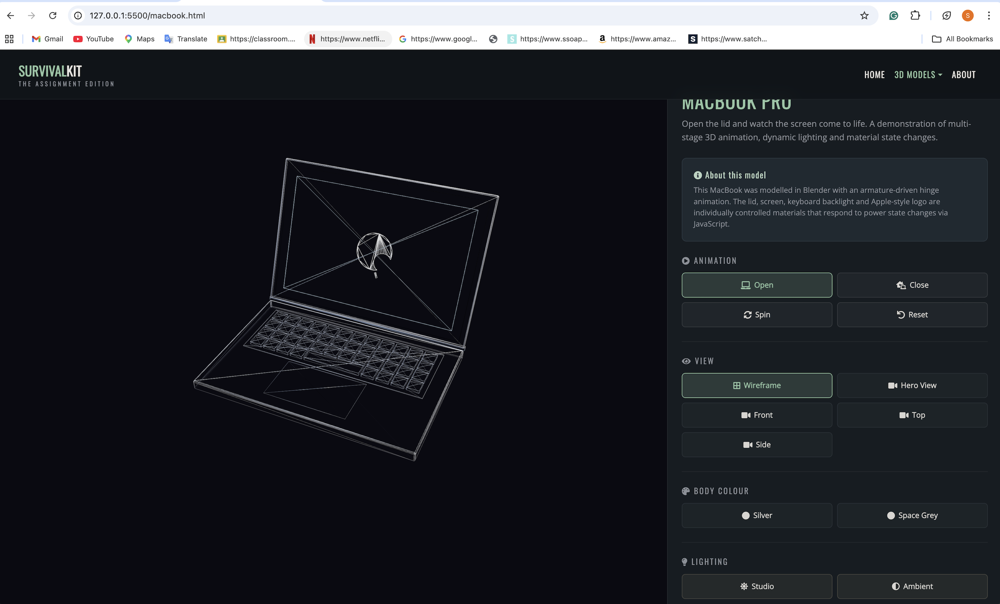
Wireframe toggled on — the mandatory feature working.
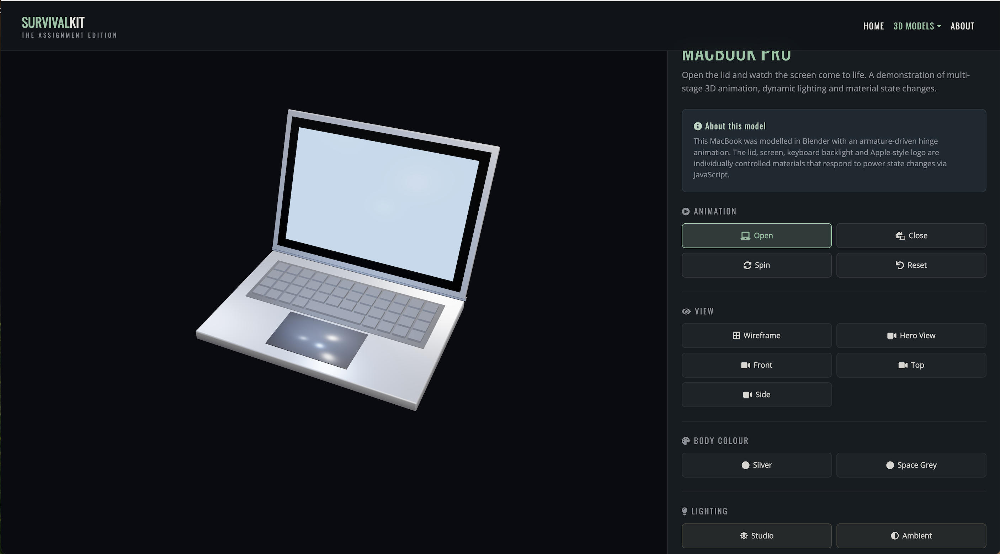
MacBook fully open with the screen and keyboard glowing.
Mobile
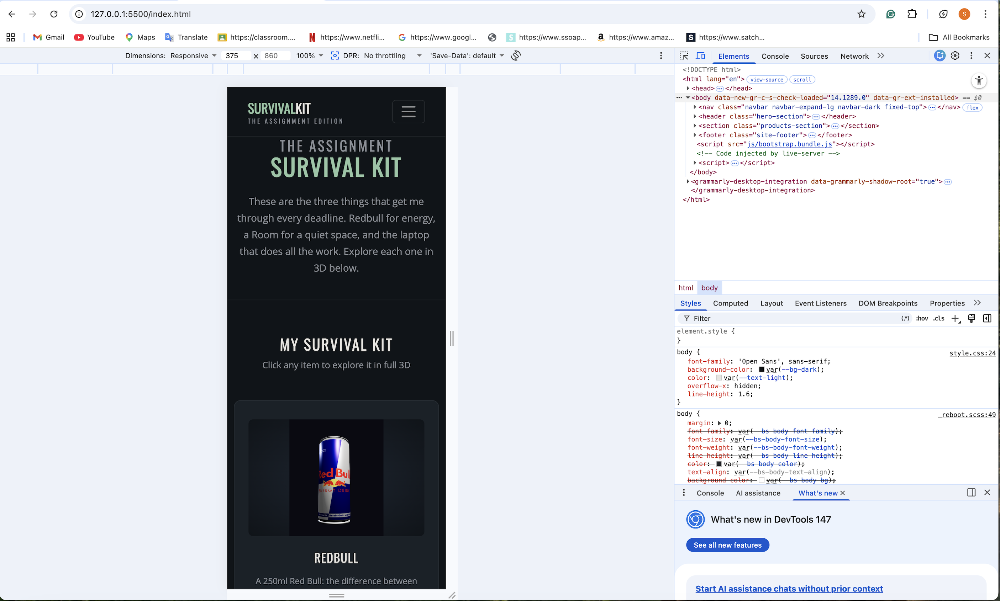
Home page on iPhone SE.
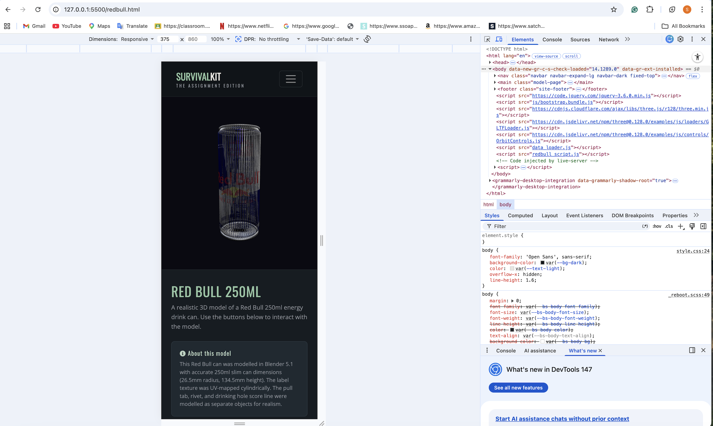
Model page on mobile — viewport on top, controls underneath.
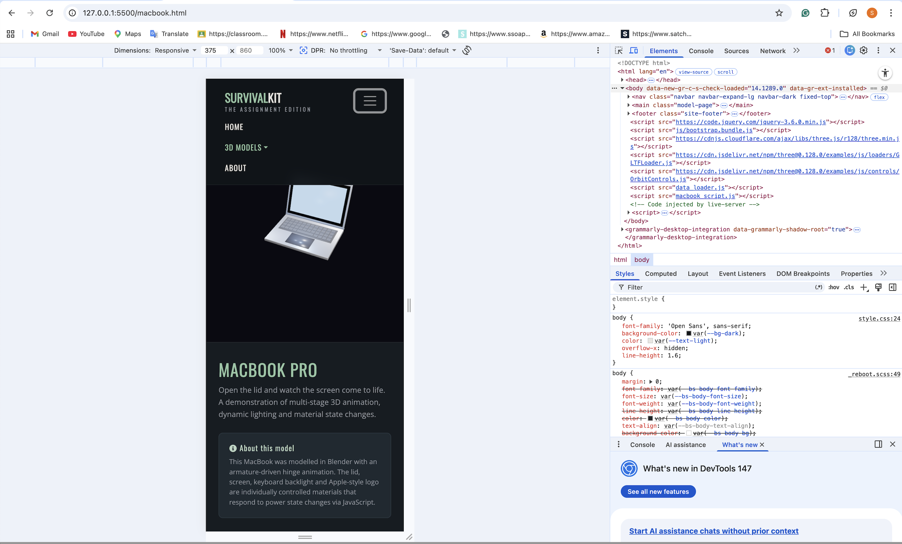
Mobile navbar with the hamburger menu open.
Proof of MVC, AJAX & SQLite
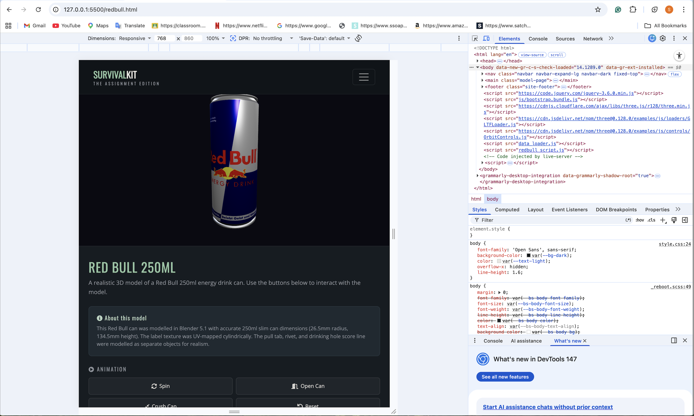
Browser Console showing the [Data Loader] logs — loaded from PHP/SQLite backend, 3 models found, content injected.
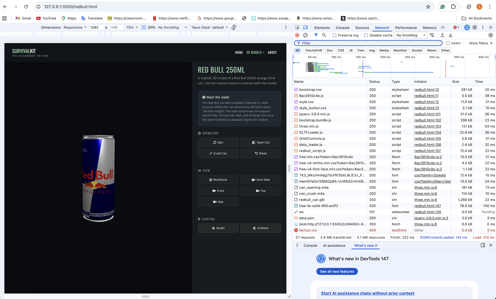
Network tab confirming get_models.php returned 200 OK with the JSON payload from SQLite.
Submission Links
- GitHub Repository: URL to be provided in the final submission
- Live Application (ITS Web Server): URL pending publication to
users.sussex.ac.uk/~username/ - Blender source files: included in the submission archive (
.blendfiles alongside the.glbexports)
References & Credits
- Three.js — https://threejs.org/
- Bootstrap 5 — https://getbootstrap.com/
- jQuery — https://jquery.com/
- PHP — https://www.php.net/
- SQLite — https://www.sqlite.org/
- Blender — https://www.blender.org/
- Font Awesome — https://fontawesome.com/
- Google Fonts — Oswald and Open Sans
- Module lab tutorials — Labs 0, 1, 2, 3, 5, 6, 7, 8, and 10 from the University of Sussex Introduction to Web 3D Applications module
- Sound effects — sourced from freesound.org under Creative Commons licence
- Red Bull label texture — used solely for educational purposes within this academic project; all trademarks remain property of their respective owners
Statement of Originality
This work is submitted for the Introduction to Web 3D Applications coursework at the University of Sussex.
The 3D models, the application architecture, the design choices, the integration code, the MVC implementation (PHP, SQLite, controllers, models, API endpoint), the JavaScript interaction logic, the CSS styling, and the writing on this page are all my own work.
Open-source libraries (Three.js, Bootstrap, jQuery, Font Awesome, Google Fonts), Creative-Commons sound effects, and the Red Bull label image used for educational purposes are credited above and clearly identified as third-party assets. The lab tutorials provided foundational knowledge but no code was copied directly. All implementation was adapted, extended, and built up from scratch in this project’s own codebase.